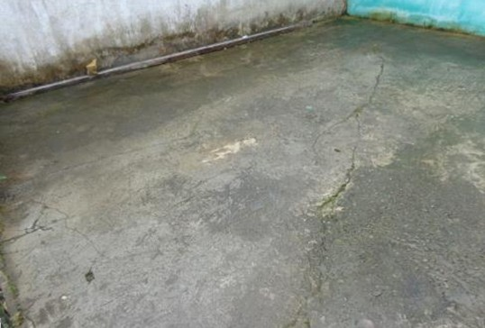

| 1 | Vista Geral do Ambiente | Vista geral do <>. |  |
| 2 | Vista Geral para o local da anomalia | Vista geral do local onde constatamos problemas patologicos em seu revestimento de acabamento, que será melhor descrita / ilustrada na fotografia a seguir: | |
| 3 | Não existe anomalia na parede | Vista geral interna para o <> sendo observado em destaque o revestimento das paredees que não apresentam nenhuma anomalia / avaria. | |
| 4 | Não existe anomalia no piso | Vista geral interna para o <> sendo observado em destaque o revestimento cerâmico de acabamento do piso que não apresentam nenhuma anomalia / avaria. |  |
| 5 | Bicheira de concretagem em elementos estruturais | Vista para <> podendo-se observar as falhas superficiais do concreto, possivelmente ocasionadas devido ao processo mecânico inadequado ao compactar a mistura de concreto no estado fresco, conhecido como adensamento, tendo como principal objetivo eliminar vazios internos da mistura, que após esse processo facilita a acomodação do mesmo no interior das fôrmas. | |
| 6 | Danos em vidros de esquadrias (vitrôs e janelas) | Vista para <> podendo-se observar alguns pontos com avarias no vidro de acabamento das esquadrias. | |
| 7 | Desagregamento da Película de Tinta em Edifiações até 05 anos. | Vista para <> podendo-se observar o desagregamento da película de tinta, possivelmente ocasionada por falta de cura mínima de 28 dias do reboco não curado. Tal anomalia ocasiona a pulverulência precoce da argamassa de preenchimento. | |
| 8 | Desagregamento da Película de Tinta em Edifiações com mais de 06 anos. | Vista para <> podendo-se observar o desagregamento da película de tinta, possivelmente ocasionada por infiltrações de águas pluviais, ocasionando na precoce pulverulência do reboco, levando a consequente perda de vida útil da impermeabilização. | |
| 9 | Desagregamento do concreto e exposição das armaduras por íon cloreto nos elementos estruturais | Vista para o elemento estrutural, podendo-se observar o disgregamento do concreto e aparente exposição da armadura, possivelmente ocasionados por princípio de corrosão devido ao processo de carbonatação, agravado pela presença do íon cloreto, presente no ar da cidade litorânea. Trata-se de anomalia derivada de infiltração de umidade devido a falta de impermeabilização ou de fadiga do sistema impermeabilizante. | |
| 10 | Descolamento de peças cerâmicas em paredes ou pisos (azulejos, placas cerâmicas, etc.) | Vista para <> podendo-se observar o descolamento das peças cerâmicas, possivelmente ocasionadas por uma irregularidade na execução dos serviços de assentamento, derivando na falta de aderência da argamassa para o acabamento final. | |
| 11 | Desplacamento precoce da argamassa / reboco | Vista para <> podendo-se observar o desplacamento precoce da alvenaria, possivelmente ocasionado pelo processo de carbonatação, culminando na fadiga prematura e falta de trabalhabilidade da edificação. | |
| 12 | Empolamento da película de tinta no revestimento da alvenaria | Vista para <> podendo-se observar o o empolamento impregnado na alvenaria, onde existe uma corrosão aparente sob a película de tinta, além da deterioração do revestimento. Tais anomalias podem ocorrer por falhas na aplicação do mesmo, formando bolhas vazias prejudicando à estética do ambiente. | |
| 13 | Estalactite nos elementos estruturais | Vista para <>, podendo-se observar alguns pontos com processo de lixiviação e consequente carbonatação do concreto formando as estalactites observadas. Esse processo despassiva a armadura e desencadeia a corrosão eletroquímica da mesma, culminando na fadiga prematura do concreto armado e na perda da vida útil da edificação. |  |
| 14 | Fissura (micro) em direções diversas, por acomodação da alvenaria, gerado em parede de vedação. | Vista em destaque para a micro fissura possivelmente ocasionada por esforços existentes na alvenaria, tornando-a monolítica, atuando como um agente de acomodação da alvenaria gerando deformações em seu revestimento. | |
| 15 | Fissura (micro) na alvenaria de vedação | Vista aproximada para a micro fissura, de origem tipo: superficial, ou seja, afetando apenas a massa corrida ou a pintura, estando intactos os blocos de alvenaria. Portanto tal anomalia se faz inofensiva sendo apenas uma alteração estética de acabamento. | |
| 16 | Fissura (micro) superficial vertical na parede de alvenaria | Vista para o << ambiente >> onde se observa uma retração do material, possivelmente ocasionado pela perda de água nas camadas de revestimento da tinta em seu período de secagem. Ocorre à perda da umidade e assim ela retrai, seu tamanho é reduzido podendo causar a fissura. | |
| 17 | Fissura generalizada por retração da argamassa, em diversas direções | Vista geral para o <>, onde podemos observar diversas fissuras em seu revestimento, possivelmente ocasionadas por umidade existente nas primeiras idades do reboco, que desencadeia movimentos de retração, os quais acabam gerando tensões internas de tração e, consequentemente, a fissuração do revestimento. | |
| 18 | Fissuras / trincas ao entorno das portas. | Vista em destaque para a fissura aparente, onde a mesma foi possivelmente derivada por pancadas da porta, o batente deve ficar bem fixado na parede, mas nem sempre isso acontece. O batente mal fixado se desloca da mesma produzindo Fissuras / trincas. | |
| 19 | Fissuras / trincas desenhando a alvenaria | Vista para a parede da edificação, sendo observada com maior precisão a fissuração generalizada no reboco, onde tal anomalia desenha o traçado da alvenaria, podendo ser ativa, quando há progressão das dimensões, ou passiva quando está estabilizada. | |
| 20 | Fissuras / trincas e danos em azulejos e rejuntes | Vista para <> podendo-se observar fissuras / trincas em revestimentos e na argamassa de preenchimento das juntas de assentamento dos rejuntes, comprometendo o desempenho da placa cerâmica e levando em perda de vida útil na estanqueidade do mesmo e absorção de deformações. | |
| 21 | Fissuras / trincas e rompimentos dos forros em gesso | Vista para <> podendo-se observar fissuras / trincas, no revestimento de acabamento de gesso, possivelmente ocasionadas pela desestruturação da sustentação e de apoio dos forros em gesso em razão de sua extrema fragilidade à compressão | |
| 22 | Fissuras / trincas em alvenaria sobre os vãos de portas, janelas e demais caixilhos (VERGA) | Vista para <> podendo-se observar Fissuras / trincas, possivelmente ocasionadas por falta ou deficiência de verga em concreto armado sobre estes vãos. | |
| 23 | Fissuras / trincas em alvenaria, ao longo da superfície da parede e em 45.º (graus) | Vista para <> podendo-se observar Fissuras / trincas, possivelmente ocasionadas por recalque diferencial nas fundações decorrentes da movimentação e/ou desnudação do solo. | |
| 24 | Fissuras / trincas em alvenaria, horizontais abaixo do teto entre a junção da laje (concreto) e a parede. | Vista para <> podendo-se observar fissuras / trincas possivelmente ocasionadas por falta de encunhamento (tijolos maciços assentados a 45.º) sob vigas do respaldo das paredes. |  |
| 25 | Fissuras / trincas em alvenaria, horizontais junto a viga estrutural de concreto armado | Vista em destaque para uma trinca horizontal de origem térmica, possivelmente ocasionada por movimentações diferenciadas entre dois componentes de materiais distintos (estrutura de concreto - viga estrutural, com a alvenaria de fechamento), que no caso por sofrerem dilatações térmicas diferenciais, fissuram-se / trincam-se naturalmente por tração combinada com cisalhamento nas interfaces de encontro entre os materiais. | |
| 26 | Fissuras / trincas em alvenaria, junto ao encontro de paredes | Vista para <> podendo-se observar fissuras / trincas, na junção da alvenaria decorrente da falta de colocação de aço fino, a cada 2 fiadas, entrando 5 cm na estrutura de concreto armado. |  |
| 27 | Fissuras / trincas em alvenaria, sob os peitoris de janelas e caixilhos (CONTRA-VERGA) | Vista para <> podendo-se observar Fissuras / trincas, possivelmente ocasionadas por falta ou deficiência contra-verga em concreto armado sobre estes vãos. Eventual pressão hidrostática exercida através do solo. | |
| 28 | Fissuras / trincas em alvenaria, verticais junto a pilares em concreto armado | Vista para <> podendo-se observar fissuras / trincas possivelmente ocasionadas por falta de amarração da alvenaria nas peças em concreto armado (pilar). |  |
| 29 | Fissuras / trincas em lajes, com ou sem cobertura de telhas de qualquer espécie - lado interno | Vista para <> podendo-se observar fissuras / trincas, no pano de laje, possivelmente ocasionadas por vibrações externas. | |
| 30 | Fissuras / trincas em lajes, sem cobertura - lado externo | Vista para <> podendo-se observar fissuras / trincas, generalizadas no revestimento do pano de laje, do lado externo, possivelmente ocasionada por retração plástica, onde a mesma retrai primeiramente no estado plástico e depois no estado rígido. | |
| 31 | Fissuras / trincas em pilares e vigas | Vista para <> podendo-se observar fissuras / trincas, na peça estrutural (pilar / viga), possivelmente ocasionadas por carbonatação. Esse processo despassiva a armadura e desencadeia a corrosão eletroquímica da mesma, culminando na fadiga prematura do concreto armado e na perda da vida útil da edificação. | |
| 32 | Fissuras / trincas em pisos cerâmicos por Gretamento | Vista para <> podendo-se observar fissuras / trincas, no revestimento cerâmico do piso.Tal anomalia pode ter sido ocasionada pelo gretamento das placas, ocorrendo rupturas na superfície esmaltada causadas por esforços mecânicos, resultando na separação das cerâmicas em varias direções geralmente, circular, ou espiral, ou em forma de teia de aranha. | |
| 33 | Fissuras / trincas em pisos cerâmicos por Tensões | Vista para <> podendo-se observar fissuras / trincas, no revestimento cerâmico do piso, ocasionadas por tensões de tração e de compressão superiores à resistência da placa cerâmica. |  |
| 34 | Fissuras / trincas em pisos comuns (cimentado liso ou rústico) - longe das bordas das paredes | Vista para <> podendo-se observar fissuras / trincas, no piso, possivelmente ocasionado por movimentação de solo de base. |  |
| 35 | Fissuras / trincas em pisos comuns (cimentado liso ou rústico) - próximo das bordas das paredes | Vista para <> podendo-se observar fissuras / trincas, no piso, próximo às bordas das paredes, possivelmente provocado pelo esborcinamento de quebra das bordas, sendo a mesma ocasionada por possíveis fatores como, adoção das barras de transferência de diâmetro ou especificação inadequada de materiais de preenchimento. | |
| 36 | Fissuras / Trincas generalizadas com manchas de umidade em edificação exposta ao tempo | Falta de pintura e de manutenção do revestimento externo de paredes leva à perda do carbonato de cálcio que é o componente que mantém junto os grãos de areia. A falta de pintura regular, permite que a água da chuva lave o revestimento, levando ao colapso do revestimento. |  |
| 37 | Fissuras / trincas na alvenaria - localizada proxima a viga estrutural de madeira | Vista em destaque para a parede de vedação, podendo-se observar uma Fissuras / trincas aparente, possivelmente ocasionada por movimentação natural da viga de madeira estrutural levando á consequente ruptura da alvenaria. | |
| 38 | Fissuras / trincas transpassante em alvenaria de vedação | Vista para a Fissuras / trincas transpassante, onde a mesma se inicia na junta de contração, provocando abertura e fechamento das partes dos blocos de concreto formados, de acordo com as variações sazonais da temperatura. Esta movimentação das partes fissuradas exige que se utilize um concreto que possa resistir aos esforços resultantes destas variações sazonais. | |
| 39 | Instalações Elétricas Precárias | Vista para <> podendo-se observar as instalações elétricas expostas ou ligações clandestinas, sem tampa de proteção e/ou isolamento de segurança, que se encontra em desacordo com a Norma Técnica ABNT NBR 5410 | |
| 40 | Lajes - Lascamento em pano de lajes | Vista para <> podendo-se observar fissuras / trincas, no pano de laje, possivelmente ocasionadas por falhas de concretagem em seu período construtivo que reage com o tempo, surgindo fissuras, trincas e lascamentos na superfície. | |
| 41 | Mancha de umidade - devido a capilaridade | Vista em destaque para rodapé do muro de fechamento, onde podemos observar manchas intensas de umidade em sua base, possivelmente ocasionadas devido à capilaridade fazendo que o fluido seja atraído por sua porosidade. |  |
| 42 | Mancha de umidade no peitoril da janela | Vista em destaque para uma mancha de umidade no peitoril da janela aparente, tal anomalia pode ter sido ocasionada por falha na execução do serviço de vedação dos caixilhos. | |
| 43 | Mancha no revestimento do piso, com fungos e algomerados | Vista em destaque para o revestimento do piso, onde podemos observar o desenvolvimento de fungos e aglomerados, tendo como consequência provável, a perda de vida útil da impermeabilização. | |
| 44 | Manchas / Infiltrações nas juntas de dilatação | Vista para <>, podendo-se observar as manchas de umidade impregnadas nas juntas de dilatação, tanto no teto, como nos pisos dos subsolos onde encontram-se com diversas falhas de preenchimento com material inadequado. Os materiais mais apropriados são os mastiques elásticos necessários para a vedação e proteção do concreto, evitando a penetração da umidade que pode provocar a carbonatação do concreto e a despassivação das armaduras, condições que uma vez alcançadas culminam na perda da vida útil das estruturas de concreto e da edificação. |  |
| 45 | Manchas de umidade - derivado por infiltração no telhado de cobertura | Vista em destaque para as manchas de umidade na argamassa de revestimento da alvenaria, possivelmente ocasionado pela infiltração de águas pluviais, através da falha ou avaria no telhado de cobertura. | |
| 46 | Manchas de umidade na argamassa de revestimento - decorrentes de infiltrações de águas pluviais | Vista para <> podendo-se observar as manchas de umidade na argamassa de revestimento da alvenaria, possivelmente ocasionado pela infiltração de águas pluviais através das Fissuras / trincas na alvenaria e/ou lajes de cobertura. | |
| 47 | Manchas de umidade na parede com a presença de fungos e aglomerados | Vista para <> podendo-se observar as manchas de umidade no reboco de acabamento, possivelmente ocasionado pela presença de fungos e aglomerados, oriundos da umidade que acomete a alvenaria, levando a consequente perda de vida útil da mesma. | |
| 48 | Manchas de umidade no rodapé da edificação | Vista para <> podendo-se observar as manchas de umidade no rodapé impregnadas na alvenaria, levando a consequente perda de vida útil da impermeabilização. | |
| 49 | Manchas diversas, por efluorescência | Vista para <>, podendo-se observar anomalia patológica denominada como eflorescência, sua formação é derivada da evaporação do solvente. Essa solução de água e sal movimenta-se de uma parte a outra da estrutura através da rede capilar do material e se deposita geralmente na superfície das peças cerâmicas, formando manchas esbranquiçadas de difícil remoção. | |
| 50 | Manchas solubilizadas de óxido de ferro (ferrugem) | Vista para <> podendo-se observar as manchas solubilizadas com óxido de ferro devido à provável corrosão dos elementos metálicos expostos. | |
| 51 | Muretas - Fissuras / Trincas em muretas e platibandas exposto ao tempo | Vista em destaque para o << ambiente>> exposta aos raios solares incidindo diretamente sobre a cobertura, produzindo calor execivo. Os componentes como lajes, platibandas e muretas, expostos aos raios solares sofrem dilatação com o surgimento de trincas. | |
| 52 | Muro de fechamento - apresentando manchas de umidade e buracos, foto aproximado | Outra vista para o muro de fechamento, onde podemos observar com maior precisão os buracos citados anteriormente, onde tal anomalia pode danificar o sistema de impermabilização do mesmo. |  |
| 53 | Muro de fechamento - apresentando manchas de umidade e buracos, foto geral | Vista geral para o muro de fechamento, onde podemos observar a presença de alguns buracos com falta de arremate de acabamento, alem de pontos de umidade em sua extensão. |  |
| 54 | Muro de fechamento apresentando mancha de umidade em revestimento | Vista para o << ambiente >> onde a ação natural do tempo com a chuva pode provocar as indesejáveis manchas de umidade além do aparecimento ou “afloramento” da água na superfície, perdendo a vida útil da impermeabilização. | |
| 55 | Muro de fechamento com Fissuras / trincas horizontal no revestimento de acabamento | Vista para o muro de alvenaria, onde podemos observar uma fissura horizontal, possivelmente ocasionada por expansão da alvenaria. Tal anomalia é derivada pela movimentação higroscópica por absorção de umidade de seus elementos constituintes. Ao absorver a umidade, tijolos, blocos e argamassas podem sofrer expansão e gerar movimentação diferenciada entre as fiadas da alvenaria ou entre os tijolos e a junta de argamassa. | |
| 56 | Muro de fechamento com Fissuras / trincas horizontal no topo | Vista geral para a face do muro, onde se observa mancha de umidade intensa além de uma trinca percolante ao beiral do mesmo, ocasionando possivelmente um futuro desplacamento do reboco devido o enfraquecimento do mesmo derivado pela umidade presente. | |
| 57 | Muro de fechamento Fissuras / trincas vertical na alvenaria | Vista em destaque para uma fissura vertical no muro aparente, onde se observa que a mesma está localizada na junção entre a alvenaria e o concreto armado do pilarete. | |
| 58 | Muros - Danos em paredes e muros de divisa (fissuras, trincas, quebras, capelos, etc.) | Vista para o muro de divisa, podendo-se observar alguns pontos com fissuras / trincas no acabamento do mesmo, possivelmente ocasionados por movimentação em função de dilatação térmica e/ou abalamentos. |  |
| 59 | Muros sem reboco - Manchas de umidade próximo a pilares | Vista em destaque para os elementos estruturais, expostos diretamente a ação natural do tempo, onde podemos observar uma mancha de umidade impregnada no pilar. Tal anomalia reduz acentuadamente o sistema de vida útil / impermeabilização. |  |
| 60 | Rachaduras / Fendas ao longo da superfície da parede e em 45.º | Vista para <> podendo-se observar a rachadura / fenda em 45.º oriunda provavelmente da tensão de cisalhamento, que trata-se de forças aplicadas na mesma direção, porém, em sentidos opostos, em decorrência de eventual recalque da fundação. | |
| 61 | Telhado - Corrosão Galvânica em Estruturas Metálicas | Vista para a estrutura metálica do telhado, onde podemos observar um grande índice de corrosão sendo estas, deteriorações do aço, derivado de contato da estrutura com materiais de diferentes compostos, com gases nocivos ou passagem de umidade. | |
| 62 | Telhado - Danos em telhas metálicas | Vista para as telhas metálicas de cobertura, podendo-se observar suas avarias, possivelmente provocadas pelos deslocamentos das mesmas através de movimentação das lajes de cobertura. | |
| 63 | Telhado - Danos na cobertura de fibrocimento | Vista para sistema estrutural do telhado, podendo-se observar a desestruturação do engrandamento de madeira de sustentação e de apoio de fibrocimento, possivelmente ocasionados pelas constantes trepidações e vibrações externas. |  |
| 64 | Telhado de cobertura - estruturas de madeira do mesmo em estado degenarado | Vista parcial do telhado aparente onde podemos observar que o mesmo não está estável, podendo sofrer com abalamentos ou vibrações, pois seu estado físico encontra-se degenerado. | |